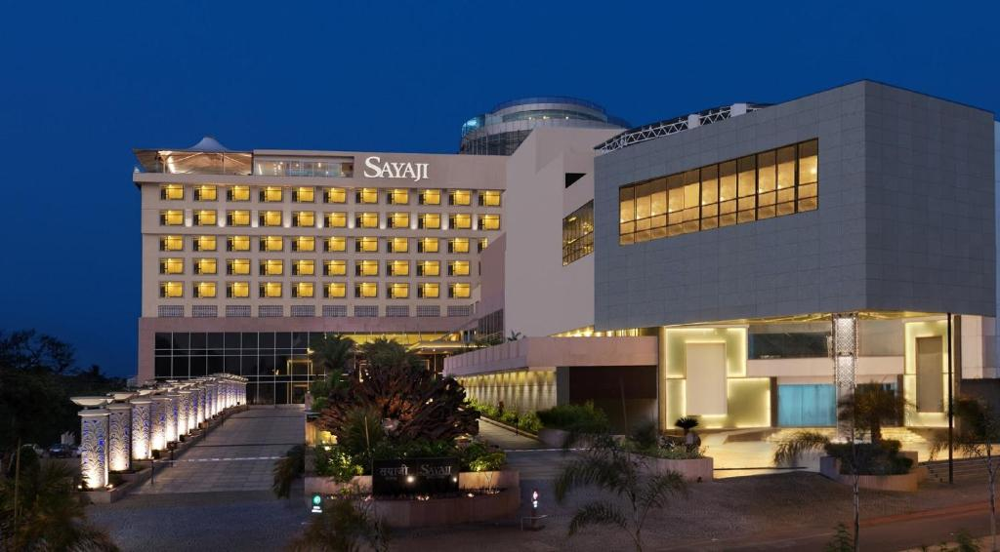

Hotel 3 Star
1. Ambiance of the Hotel-3 Star
Hotel 3-star provide a very Good Ambiance for its Visitor
Modern and Elegant: The hotel aims to provide a blend of modern comfort and timeless elegance.
Clean and Well-Maintained: Reviews frequently highlight the cleanliness of the rooms and the overall property.
Peaceful Surroundings: Located near the highway but also surrounded by farmland, some guests appreciate the serene environment and scenic views of fields and mountains from their rooms.
Good for Transit: Its location near the Mumbai-Bangalore highway makes it a popular stopover for road trips.
2. Things That Make it Famous
Hotel Grand Indu in Kolhapur is famous for several key reasons, consistently highlighted in guest reviews:
# Strategic Location (especially for travelers):
Highway Proximity:- This is arguably its biggest draw. It's located very close to the Mumbai-Bangalore highway (NH48 or NH66, depending on the specific stretch), making it an ideal stopover for those on long road trips.
This avoids city traffic and saves commuting time.
Access to Industrial Areas:- For business travelers, its location near MIDC (Maharashtra Industrial Development Corporation) areas is highly convenient.
# Exceptional Cleanliness:
Spotless Interiors:- Guests frequently commend the hotel for its consistently clean rooms, bathrooms, and common areas, ensuring a hygienic stay.
Well-Maintained Property:- The overall property is noted for being well-kept and tidy, reflecting good management and attention to detail.
Hotel Radiant
1. Ambiance of Hotel Radiant
Hotel 3-star provide a very Good Ambiance for its Visitor'
Warmly Decorated and Comfortable: The hotel offers a welcoming and cozy atmosphere with warmly decorated rooms designed for a relaxing stay.
Guests often describe the ambiance as pleasant and comfortable.
Modern with City Views: While providing essential comforts, the hotel also offers a modern feel.
Some rooms provide "stunning views of the busy cityscape below," adding to the urban experience.
2. Things That Make it Famous
Hotel Radiant is famous for several key reasons, consistently highlighted in guest reviews:
# Excellent Food and Dining:
Highly Praised Restaurant:- The on-site restaurant (and often a rooftop restaurant/bar) receives very positive feedback for its delicious food, with specific mentions of good breakfast options and a variety of cuisines (American, Chinese, Indian).
Authentic Food Experiences:- The hotel aims to provide authentic food experiences, making dining a highlight for many guests.
# Comprehensive Amenities and Facilities:
Wellness and Business Facilities:- Unlike some other 3-star hotels, Hotel Radiant often features a spa, gym, and business center/conference facilities, catering to both leisure and business travelers.
Variety of Services:- It offers a wide range of services including 24-hour room service, laundry service, free Wi-Fi, and multi-floor parking, enhancing guest convenience.
Hotel Sayanji

1. Ambiance of Hotel Sayanji
Luxurious and Elegant Sayaji Kolhapur boasts polished rooms and suites, sophisticated interiors, and a grand lobby, designed to offer a truly upscale experience. The architecture often aims to reflect a modern royal feel, combining contemporary design with local cultural touches.
Vibrant and Diverse Spaces The hotel features multiple dining venues, a coffee shop, and often a bar/nightclub, each with its own distinct ambiance. This allows guests to choose between a formal dining experience, a casual cafe setting, or a lively evening entertainment option.
2. Things That Make it Famous
Hotel Sayanji is famous for several key reasons, consistently highlighted in guest reviews:
# Premium Hospitality and Service:
Yours Truly" Service:- Sayaji Hotels chain is known for its signature "Yours Truly" service, emphasizing personalized and attentive care for each guest.
Reviews often highlight the staff's politeness, helpfulness, and promptness.
Yours Truly" Service:- Sayaji Hotels chain is known for its signature "Yours Truly" service, emphasizing personalized and attentive care for each guest.
Reviews often highlight the staff's politeness, helpfulness, and promptness.
# Exceptional Dining Experiences
Multiple Restaurants:- Sayaji Kolhapur features several on-site restaurants, including well-known names like Barbeque Nation and their own specialty restaurants like Blue Lotus and Moon Tree Café.
This provides a wide variety of cuisines and dining atmospheres.
Multiple Restaurants:- Sayaji Kolhapur features several on-site restaurants, including well-known names like Barbeque Nation and their own specialty restaurants like Blue Lotus and Moon Tree Café.
This provides a wide variety of cuisines and dining atmospheres.